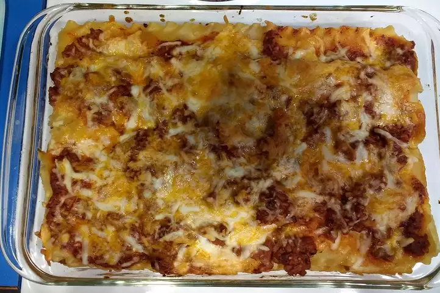

Lasagna Recipe

This is what you should expect after following along!
Lasagna is a type of pasta its very delicious trust me bro
The recipe is simple and easy to follow so grab your ingredients and lets start!
Ingredients
- Package lasagna noodles
- 1 pound lean groud beef
- Salt and pepper to taste
- Jar of spaghetti sauce
- Clover garlic, minced
- Half pound shredded mozzarella cheese
- Half pound shredded cheddar cheese
- 1 pint ricotta cheese
Steps
- Bring a large pot of lightly salted water to a boil. Add pasta and cook for 8 to 10 minutes or until al dante;drain.
- Preheat oven to 350 degrees F (175 degrees C). In a large skillet over medium-high heat, brown beef and season with salt and pepper;drain. Stir in spaghetti sauce and garlic and simmer 5 minutes.
- In a medium bowl, combine mozzarella, Cheddar and ricotta; stir well. in 9x13 inch pan, alternate layers of noodles, meat mixture and cheese mixture until pan is fulled.
- Bake in preheated oven for 30 minutes, or until cheese is melted and bubbly.